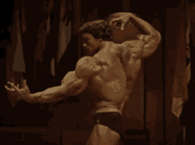

Estar en forma a los 75 años es un objetivo al que muchas personas aspiran. Muchos admiran a los famosos como ídolos porque se mantienen activos y prosperan incluso a una edad avanzada.Inventó el press Arnold para estimular activamente las tres cabezas de los hombros (anterior, mediolateral, posterior) y lograr un mejor desarrollo y fuerza muscular.